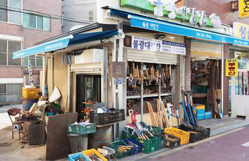
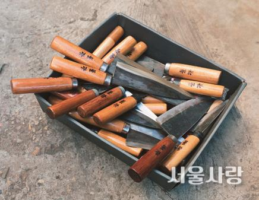
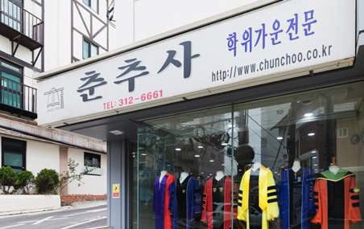
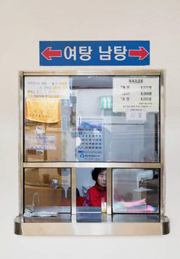
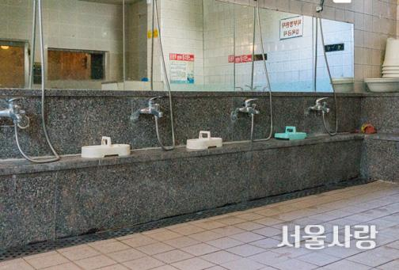
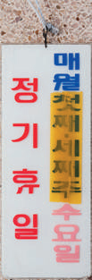
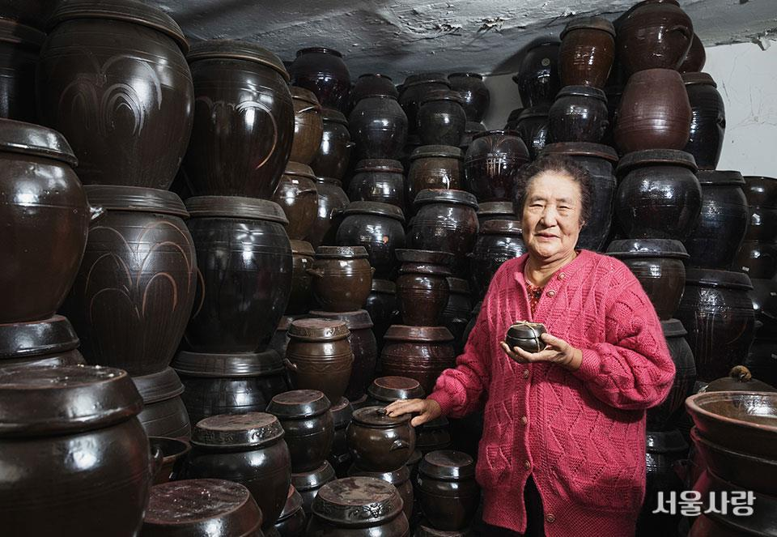

반세기 넘도록 한 가지 일을 이어온 사람들. br 어쩌면 ‘이어왔다’보다 ‘지켜왔다’는 말이 더 어울리는 각 장소는 그곳을 드나든 이들의 추억과 맞물리며 삶의 일부로 자리 잡았다. 이 익숙한 장소들이 언제까지나 우리 곁에 남기를 바라는 마음으로 전하는 오래가게 이야기.
since 1963
불광역 인근에 자리한 작고 오래된 가게 하나. 이곳은 외관만 슬쩍 보고 지나친다면 각종 공구를 판매하는 철물점으로 오해하기 쉽다. 하지만 잠시 발길을 멈추고 들여다보면 그제야 고개를 끄덕이게 된다. 탕탕탕! 경쾌하고 규칙적인 망치질 소리와 함께 담금질한 쇠에서 나는 냄새가 코끝을 두드리는 곳, 바로 대장간임을 알게 되기 때문. 가정과 업소용 칼부터 농기구, 공구 까지, 이곳에서는 무쇠를 이용한 다양한 제품을 수작업으로 생산한다. 박경원 대표의 뒤를 이어 아들 박상범 씨까지, 부자가 협업해 완성도 높은 제품을 만들어내는 ‘불광대장간’은 바로 앞 초등학교 학생들에게까지 소문이 자자하다. “여기 진짜 오래된 곳이에요!” 알은체하며 밝게 인사하고 지나 가는 아이들만 봐도 ‘오래가게’다운 면모가 드러난다. 이날 불광대장간에서는 정 만들기가 한창이다. “석공이 주문한 거예요. 요즘은 돌 깨는 작업을 기계가 대신하지만, 여전히 정으로 깨는 방식을 고수하는 분들이 계시거 든요.” 박경원 대표가 800~1000℃의 불에 달군 쇳덩이를 꺼내 모루에 올리면, 아들이 수차례 망치질해 모양을 다듬는다. 그리고 담금질까지 거쳐 쇠의 강도를 높인다고. “한 번이라도 저희 제품을 써본 분은 알아요. 가치가 있는 튼튼한 제품이라는 것을요. 하루 종일 10개 남짓 만들어요. 하나 만드는 데 1시간 정도 소요되거든요.” 옛 제작 방식뿐 아니라 제품에 대한 신념까지 닮은 부자. 이들이 정성껏 만든 제품은 ‘불광’이라는 두 글자를 깊이 새기고 매일 전국 각지의 주인을 찾아가고 있다.
은평구 통일로69길 15 | 02-353-8543  since 1955
“연말, 연초에 졸업식이 많다 보니 지금이 가장 분주한 시기입니다.” ‘춘추사’ 최우철 실장이 전한 매장 풍경은 직접 방문해보니 그가 말한 그대로다. 다양한 재질과 색상으로 제작한 수많은 학사·석사·박사 학위 가운이 매장 한쪽을 가득 메우고, 매장 안에 마련한 별도 공간에서도 제작한 가운을 반듯하게 다림질하는 작업이 한창이다. “이 매장의 시작은 할머니에게서 출발해요. 1954년부터 각종 가운을 판매하셨고, 매장을 연 건 그로부터 1년 뒤예요. 춘추사라는 이름을 걸고 학위 가운을 전문으로 판매한 건 1960년부터고요. 저희 가족 모두가 이 일을 함께 해왔어요.” 최우철 실장이 전하는 이야기는 한 가지 일을 한결같이 지켜온 3대 가족의 이야기에 더 가깝게 들린다. 할머니 일이 아버지 최희규 대표에게 이어지고, 이제는 아버지를 도와 춘추사를 이끄는 아들과 딸, 특히 디자인에 일가견이 있는 딸은 학위 가운의 전반적인 디자인을 책임지고 있다고. “가족의 일이 곧 우리의 일이라고 생각하며 일해요. 사실 저희에게는 보고 자라온 환경이라 익숙하지요. 그런데 오래가게라는 영예를 안겨주셔서 감사할 따름 입니다.” 한 해 동안 춘추사가 대여해주는 학위 가운은 대략 6만 벌 정도. 이 외에 맞춤 제작을 하거나, 고유 디자인이 있는 학교·기관의 학위복을 추가로 생산하기도 한다고. 누군가의 특별한 순간을 기념하는 옷 짓는 일이 즐겁다는 춘추사. 그 기쁨이 일에 대한 의지로 고스란히 이어져 있음을 느낀다.
서대문구 이화여대8길 10 | 02-312-6661 since 1967
‘목욕탕’이라는 단어는 어감부터 왠지 모를 친근함이 느껴진다. 아마도 커다란 탕 안에 이웃 여럿이 몸을 담그고 서로 안부를 묻는 공간적 의미가 겹치기 때문 아닐까. 물장구 치기 좋아하는 꼬마부터 온탕에 몸을 담그고는 “시원하다”고 하는 어른까지, 목욕은 그 자체로 누군가에게는 즐거움이자 또 누군가 에게는 휴식이 되기도 한다.
용산구 원효로에 위치한 ‘원삼탕’은 올해로 문을 연 지 51년 된 장수 목욕탕. 새마을운동 당시 위생 시설을 늘리겠다는 명분 아래 새마을 목욕탕 사업이 유행처럼 번졌는데, 원삼탕은 이때부터 긴 역사의 포문을 열었다. 개업 당시에는 최신 시설을 갖춘 공중목욕탕이었지만 반세기가 지난 지금은 옛 추억을 떠올리는 애틋한 장소로 변모했다. 휴무일을 알리는 낡은 팻말이 정겹고, 커다란 글씨로 눈에 띄게 새긴 여탕과 남탕 표시도 반갑다. 여기에 남탕에서만 만날 수 있는 매력적인 이발소까지. 구식이라 해도 그만한 매력과 여유가 있어 여전히 이곳을 찾는 발길이 끊이지 않는다. 비닐봉지에 목욕 용품 몇 가지만 담아 가벼운 발걸음으로 목욕탕을 찾는 동네 주민들 모습. 그 풍경에서 하루의 노곤함을 씻어내고 돌아가는 사람들의 행복이 비친다.
 용산구 원효로 123-12 | 02-717-7674  since 1967
8·15 광복과 함께 월남한 사람과 피란민, 해외에서 돌아온 사람들 등 낯선 곳에서 모여든 이들이 하나둘 정착하기 시작한 동네, 용산구 해방촌. 이 아담한 동네 초입을 지키는 ‘한신옹기’의 신연근 대표 역시 결혼과 함께 경기도에서 서울로 올라왔다. 50년 이상 옹기 하나만 바라보며 달려온 한신옹기는 이제 해방촌의 상징적 장소로 불려도 전혀 어색하지 않다. 여러 가지 장사를 거듭한 끝에 신 대표가 옹기 판매의 길로 들어선 건 천주교 옹기 장수들이 모여 하던 “항아리 파는 일이 재밌다”는 말 때문. “독립문 앞이며 남대문, 만리동 고가도로 아래까지 옹기를 들고 이곳저곳 다녔지. 바지런히 움직이니 하루에 제법 많은 양을 팔기도 했고. 옹기 파는 일이 정말로 재미있더라고.” 하지만 재미만 볼 순 없는 것이 삶의 이치다. 옹기를 쌓아둔 장소가 철거당하는 건 다반사고, 한때는 특정 외래품 판매 금지법으로 반질반질 윤이 나는 옹기는 팔 수 없는 때도 있었다. 우여곡절이 많았지만, 그 와중에도 자식들 모두 건강히 키우고 집 지어 옹기 장사를 편안하게 지속할 수 있게 된 지금, 더 바랄 것이 없다는 신연근 대표. 그는 “마음은 이미 부자”라며 당당한 지론만큼 행복한 표정을 짓는다. 서울미래유산에 이어 오래가게로도 선정된 한신옹기는 이제 신 대표의 작은아들 내외가 도맡을 예정이다. 대를 이어 옹기의 멋을 전할 한신옹기. 해방촌의 명물이 된 이곳의 존재감이 궁금하다면 직접 방문해보길 권한다.
용산구 신흥로 7 | 02-794-3687 글 제민주 사진 홍하얀